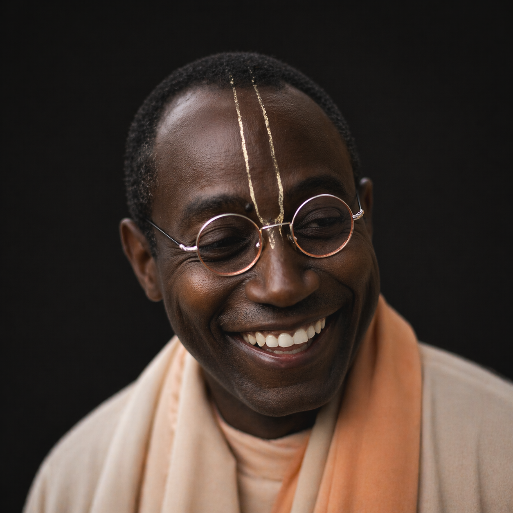

Жизнь Его Святейшества Бхакти Тиртхи Свами Махараджи — путь из гетто Кливленда к вечным лотосоподобным стопам
Джон Эдвин Фэйворс появился на свет 25 февраля 1950 года в Кливленде — в бедной, но глубоко религиозной афроамериканской семье. Самый младший ребёнок, выросший в опасных кварталах гетто, где расизм и насилие были нормой.
В детстве у него было тяжёлое заикание — несколько минут на одно слово. Но стоило процитировать Библию — речь становилась ясной и выразительной. Учителя были озадачены. К восьми-девяти годам он уже проповедовал на телевидении, радио, в больницах и тюрьмах.
Было очевидно: он родился не для того, чтобы говорить о материи.
Было очевидно, что он родился не для того, чтобы говорить о материи, а для того, чтобы прославлять Верховную Личность Бога
В Принстоне Джон оказался среди самых образованных и состоятельных людей Америки — и увидел, что многие из них глубоко несчастны. Профессора срывались. Политическая активность давала мало плодов. Нужно было менять не систему, а сознание людей.
По вечерам, после собраний по гражданским правам, он возвращался к медитации и изучал Платона, Веды, Бхагавад-гиту. Посещал лекции Шри Чинмоя и других индийских учителей. Искал глубину.

У Джона был наставник-мистик. Несколько лет он обучал его раджа-йоге, постоянно упоминая некоего Прабхупаду. Однажды он спросил трижды: «Ты действительно хочешь знать?» — предупреждая, что жизнь изменится навсегда.
«Это духовный учитель Движения Харе Кришна».
«Что?! Тех, кто носят простыни и прыгают на улицах?!»
«Да. Иди. И больше не возвращайся».
В Бостоне, в минус десять, он однажды видел семь преданных, певших на углу улицы. Через несколько часов — они всё ещё пели и танцевали. Либо безумцы. Либо у них есть нечто невероятно ценное.
В 1972 году, с дипломом Принстона в руках, Джон Фэйворс бросил всё. Обрил голову, оставил карьеру, отправился в Даллас секретарём Сатсварупы даса Госвами. 16 февраля 1973 года Шрила Прабхупада дал ему духовное посвящение и имя — Гханашьяма дас.
Он ел лишь раз в день — только фрукты и орехи. Вставал до двух часов ночи. Повторял не менее сорока двух кругов маха-мантры. В университет приходил до открытия, возвращался после закрытия — в десять вечера.
Ночью, когда другие спали в фургоне, его видели с фонариком — он внимательно изучал книги Шрилы Прабхупады. Его садхана была на пределе человеческих возможностей.
Библиотечная партия объездила все колледжи и университеты США, затем отправилась в Европу. Гханашьяма прабху был лучшим распространителем книг в группе. Прабхупада написал ему лично: «Ты несёшь служение первого класса».
Когда закрытый колледж казался пустым, он всё равно шёл внутрь — помолиться. Уходил с заказом на полный комплект книг Прабхупады от профессора, случайно оказавшегося там в выходной день.
В семидесятые годы коммунистические страны были практически закрыты для американцев. Правительство запрещало любые религии. КГБ следил за каждым шагом иностранцев. Гханашьяма прабху рискуя жизнью, незаконно ввозил книги в Болгарию, Польшу, Чехословакию, Югославию и Румынию — ни в одной из этих стран не было ни храма, ни даже одного преданного.
Шрила Прабхупада — о Гханашьяме:
«Этот преданный наделён особыми полномочиями».
В последние месяцы своей жизни Шрила Прабхупада особенно любил письма, которые ему зачитывал Тамал Кришна Госвами. Это были отчёты Гханашьямы из-за железного занавеса — про профессоров, принявших запрещённые книги, про чудеса, происходившие в закрытых университетах, про молитвы и Кришну. По свидетельству Бхакти Чару Свами: «Эти письма давали Прабхупаде жизнь».
В 1977 году, тяжело больной, Шрила Прабхупада отправился в Лондон — не читать лекции, лишь вдохновить своих учеников и выразить им благодарность. Врачи предупреждали: он может не перенести путешествия. Узнав, что Гханашьяма находится в Лондоне, Тамал Кришна Госвами лично разыскал его среди сотен преданных.
Гханашьяма распростёрся в поклоне перед своим Гуру Махараджей.
Шрила Прабхупада обнял его со слезами любви и благодарности, погладил по голове и сказал: «Твоя жизнь успешна. Большое тебе спасибо».
Гханашьяма ответил, что всё сделанное возможно лишь потому, что Шрила Прабхупада уполномочил его.
Глаза Шрилы Прабхупады расширились: «Да! Точно так же, как мой Гуру Махараджа уполномочил меня — я уполномочил тебя. Так продолжается парампара».
На следующий день Тамал Кришна Госвами попросил Гханашьяму зачитать отчёт о проповеди в Восточной Европе. Прабхупада слушал — затем остановил его, строго посмотрел и сказал: «Кришна всё делает». Это было последним наставлением.
— Последняя встреча. Лондон, 1977«Всем известна только первая часть этой истории, — говорил Бхакти Тиртха Свами, — но вторая — моя любимая. Именно там Прабхупада проявил особую глубокую любовь ко мне. Выйдя из его комнаты, я испытывал сильное воодушевление: он защитил меня от гордости и научил, что все заслуги принадлежат Кришне».
В ноябре 1977 года Шрила Прабхупада оставил этот мир. Это была их последняя встреча.
Когда я говорю с этими людьми, я даже не думаю, даже не знаю, о чём буду говорить. Это не я— Бхакти Тиртха Свами, незадолго до ухода
В Западной Африке никто не хотел проповедовать: жара, болезни, вуду, политические перевороты. Бхакти Тиртха Свами пошёл туда первым. Он стал первым преданным ИСККОН, посетившим Нигерию. За шестнадцать лет — более двадцати храмов в шести африканских странах, две фермерские общины, две школы.
В 1990 году вождь племени вари стал его учеником. Чтобы эти отношения были возможны без нарушения этикета, Бхакти Тирте Свами присвоили титул верховного вождя. Он консультировал Нельсона Манделу, Кеннета Каунда, Мангосуту Бутелези. Регулярно приходил к Мухаммеду Али. В 1995 году речь на конференции в Дурбане зал встретил стоячей овацией.
Первый человек африканского происхождения, ставший инициирующим гуру в Брахма-Мадхва-Гаудия-сампрадае — древней линии духовной преемственности.
Бхакти Тиртха Свами был одним из самых плодотворных писателей ИСККОН. Он обращался к широкой аудитории: профессорам, политикам, людям, страдающим от депрессии, наркомании, потери смысла. Его книги переведены более чем на двадцать языков и используются как учебные материалы в университетах и лидерских организациях.
«Мы не можем постичь духовную реальность только через учёность. Путь к реализации — через самоотверженное служение».
— Бхакти Тиртха СвамиВ 2007 году вышла его биография — «Black Lotus: The Spiritual Journey of an Urban Mystic» Стивена Дж. Розена, 410 страниц. Название «Чёрный Лотос» отражает суть его пути: из тёмных вод гетто Кливленда — к чистоте вайшнавского посвящения.
В 2004 году, на пике своей деятельности, объехав за год тридцать две страны, Бхакти Тиртха Свами молился в духе Васудевы Датты: позвольте мне принять страдания других на себя, чтобы они могли вернуться домой, обратно к Богу. 5 августа 2004 года ему поставили диагноз: меланома четвёртой стадии.
«За последние тридцать лет я никогда не был способен так влиять на жизни людей, как за последние несколько месяцев с тех пор, как у меня обнаружили рак. Болезнь — это ответ на мою молитву. Я не променял бы этого положения ни за что на свете».
Когда физически не мог ехать в храм, он беспокоился не о своих костях, которые могли сломаться на ухабистой дороге, — а о том, что преданным будет прохладно идти к нему. Господь Джаганнатха из Нью-Йорка сам приехал к нему в Гита-Нагари — пять часов на машине.
«Удивительно! Удивительно! Может ли быть что-нибудь лучше, чем это?! Но всё же с каждым днём становится всё лучше».
— Слова Бхакти Тиртхи Свами незадолго до ухода27 июня 2005 года, в 15:35, после восьми часов киртана, с Говардхана-шилой в руках, окружённый сотнями преданных, под непрерывное пение Харе Кришна — Его Святейшество Бхакти Тиртха Свами Махараджа оставил этот мир.
«Когда я вернусь к Богу, то буду подготавливать всё к вашему приходу туда. Куда бы Прабхупада ни отправил вас — я всегда буду молиться за вас».
«Я молюсь, чтобы Господь вмешался в мою способность излучать любовь»
«Когда я вернусь к Богу, то буду подготавливать всё к вашему приходу туда. Я всегда буду молиться за вас и с любовью служить вам»